Listen & walk
We visit, measure, and talk about how you actually use the garden. No mood boards yet — just soil underfoot and possibilities.
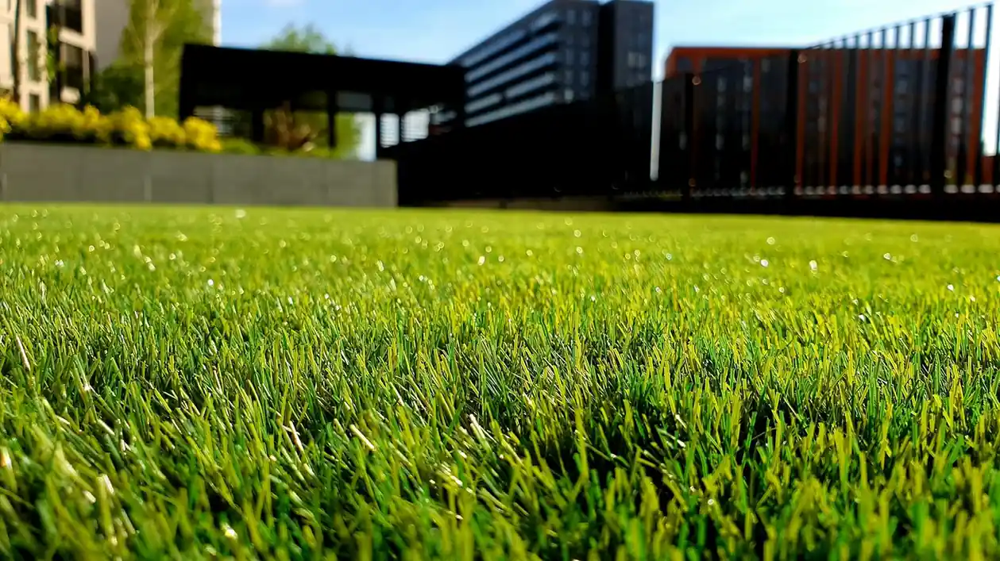
Landscape design and horticultural care for private gardens across the South East. We draw, plant, and tend spaces that feel as though they have always belonged.
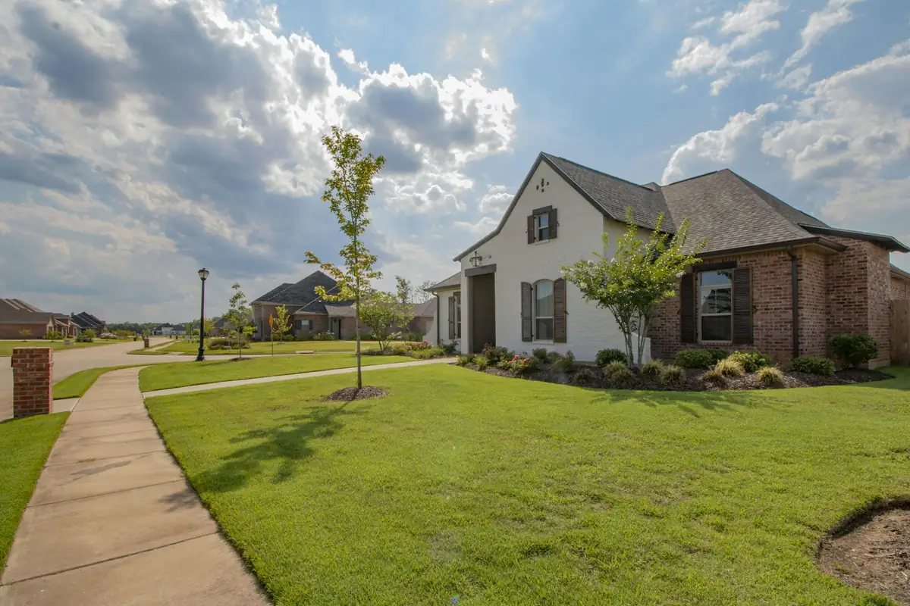
We are a small studio of designers, plantspeople and gardeners. Our work begins with a long walk, a notebook, and an honest conversation about how you want to live outside.
From a single courtyard to a whole estate, we consider soil, light, water and the passing of seasons. The result is not a finished picture, but a living composition that gets richer with every year.
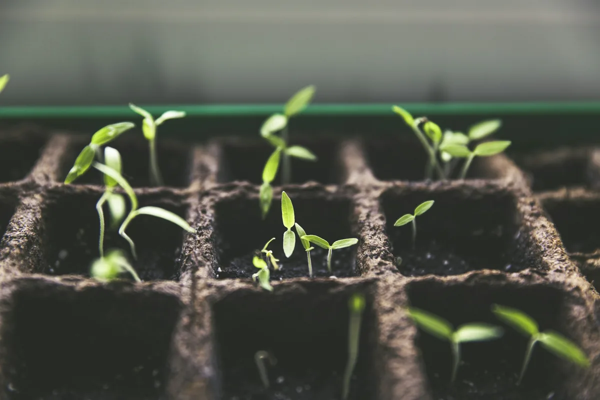
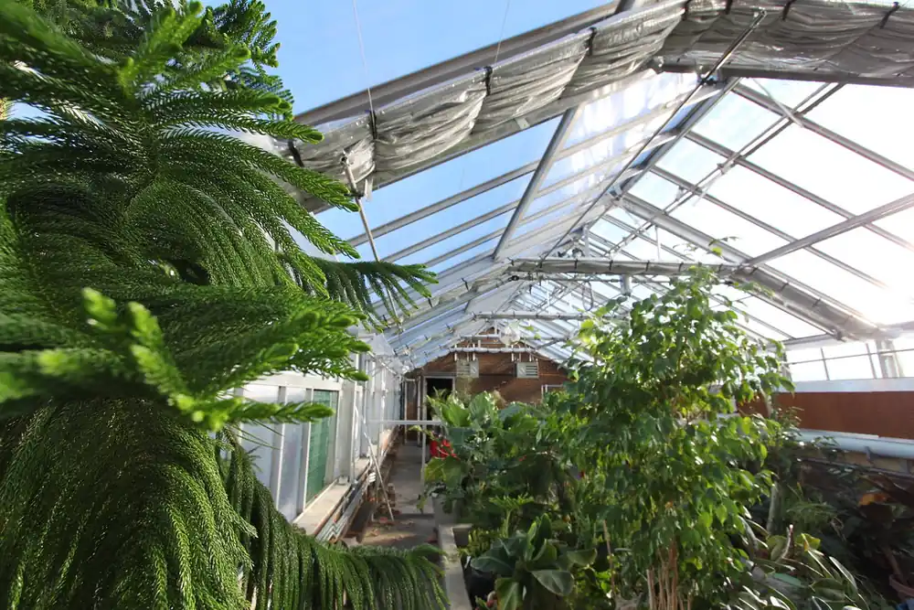
The glasshouse“They gave us a garden that feels like us — only more patient.”
Private client · OxfordshireOne studio, one standard — whether we are reimagining a whole landscape or keeping a favourite border in its finest form.
Masterplans, planting palettes, and the quiet details that make a garden legible from every window.
DiscoverHorticulturally led planting that carries colour, scent and structure from February to December.
Discover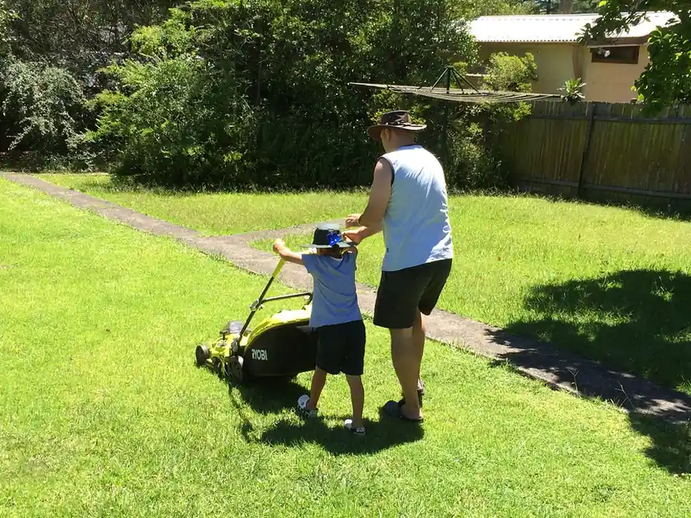
Fine lawns, flowering meadows and the patient cultural care that keeps both at their best.
Discover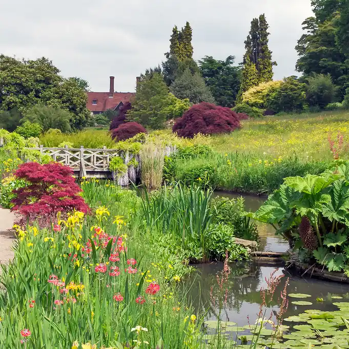
Intelligent irrigation and low-glare lighting designed to disappear into the garden, not sit on top of it.
Discover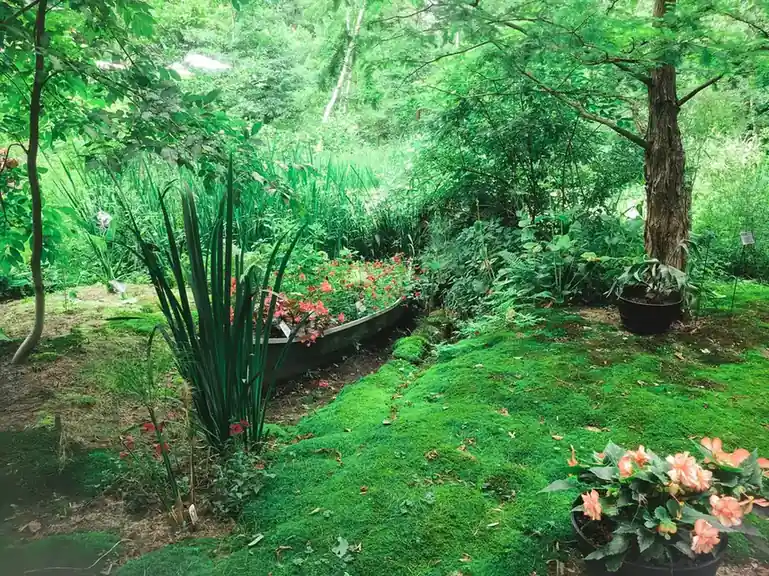
A year-round rhythm of pruning, feeding, mulching and gentle intervention from our own garden team.
DiscoverFive gardens, five very different conversations with the land. Open a project to see how each one came together.
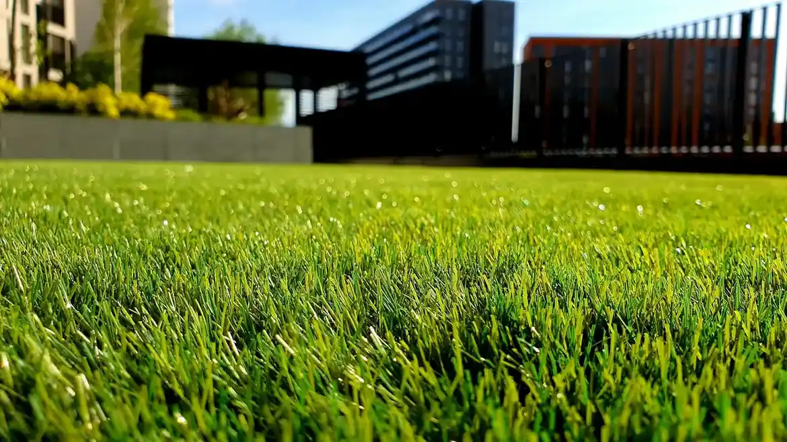
FeaturedA walled garden reawakened, with long views and rooms outdoors.
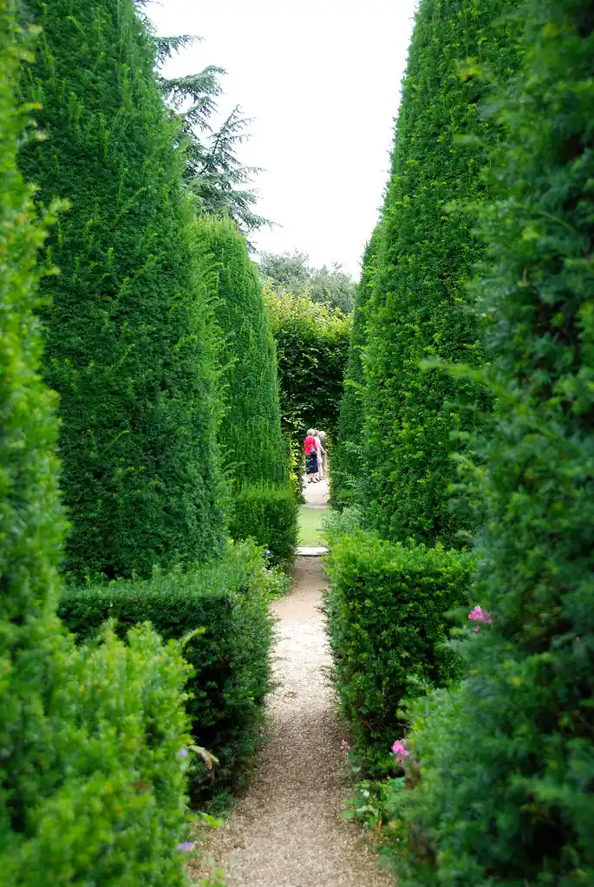
Shade, scent and a sense of enclosure.
A slow procession of colour and seed heads.
Less lawn, more life — a four-acre conversion.
A potager with beauty as well as appetite.
A Stackly garden is made slowly and deliberately. You are part of every decision, from the first pencil line to the last bulb.
We visit, measure, and talk about how you actually use the garden. No mood boards yet — just soil underfoot and possibilities.
A hand-drawn masterplan, planting palette and material sample box. We refine together until the garden feels unmistakably yours.
Our trusted craftspeople set the bones while our horticulturists place every plant. One team, one standard, no gaps between trades.
Aftercare is where a garden becomes itself. We return through the year to prune, feed, edit and quietly improve.
We do not impose a style. We read the place — its light, its shelter, its history — and make a garden that could only exist there.
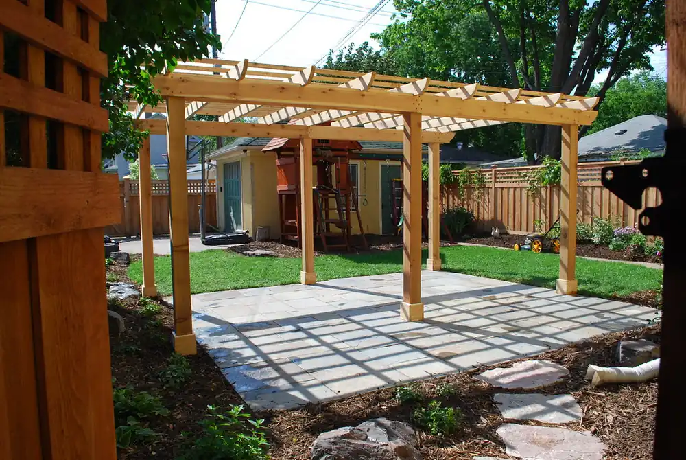
A garden is never finished. Our care plans bring the same team back through the year — with the right skill on the right day.
For courtyards, terraces and modest borders that need a confident seasonal hand.
Billed monthly · cancel anytime
For established gardens with mixed borders, lawn, hedges and a full social life.
Billed monthly · cancel anytime
A dedicated garden team for large grounds, multiple gardeners and complex planting.
Billed monthly · cancel anytime
Demonstration pricing only. No payments are taken anywhere on this site.
Quiet words from those who live with a Stackly garden, year after year.
They gave us a garden that feels like us — only more patient. Three years on, it is still surprising us.
The team listens in a way few designers do. Our courtyard is tiny, but it now feels like the calmest room in the house.
What began as a lawn problem became the best part of our home. The care plan means we actually get to enjoy it.
Meticulous, unpretentious and genuinely horticultural. They know every plant by name — and, more importantly, by habit.
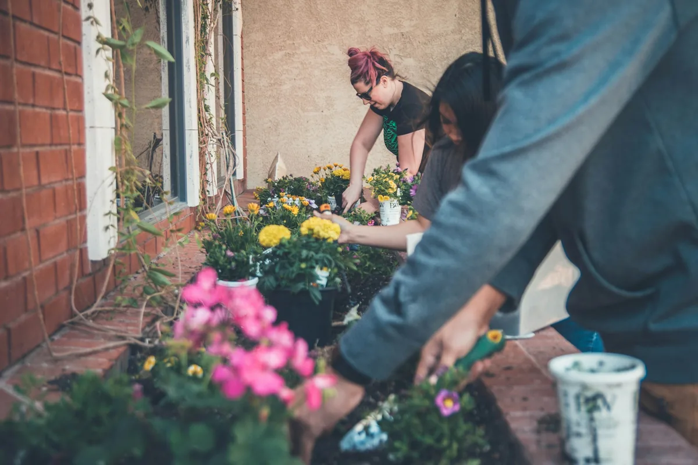
SeasonalWhy the tidiest garden is not always the healthiest, and how to edit last year's growth with a light hand.
Read the note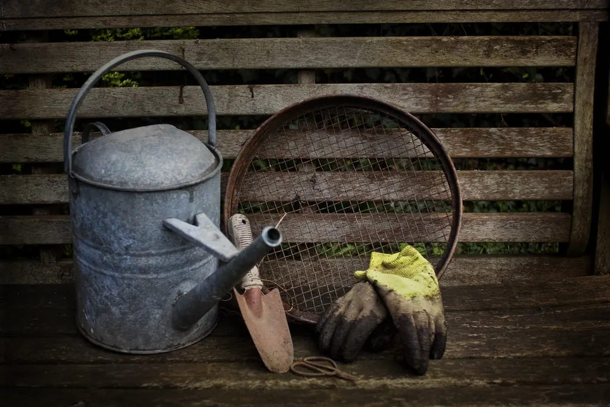
CraftThe eight implements we reach for every week — and the two we would happily never sharpen again.
Read the note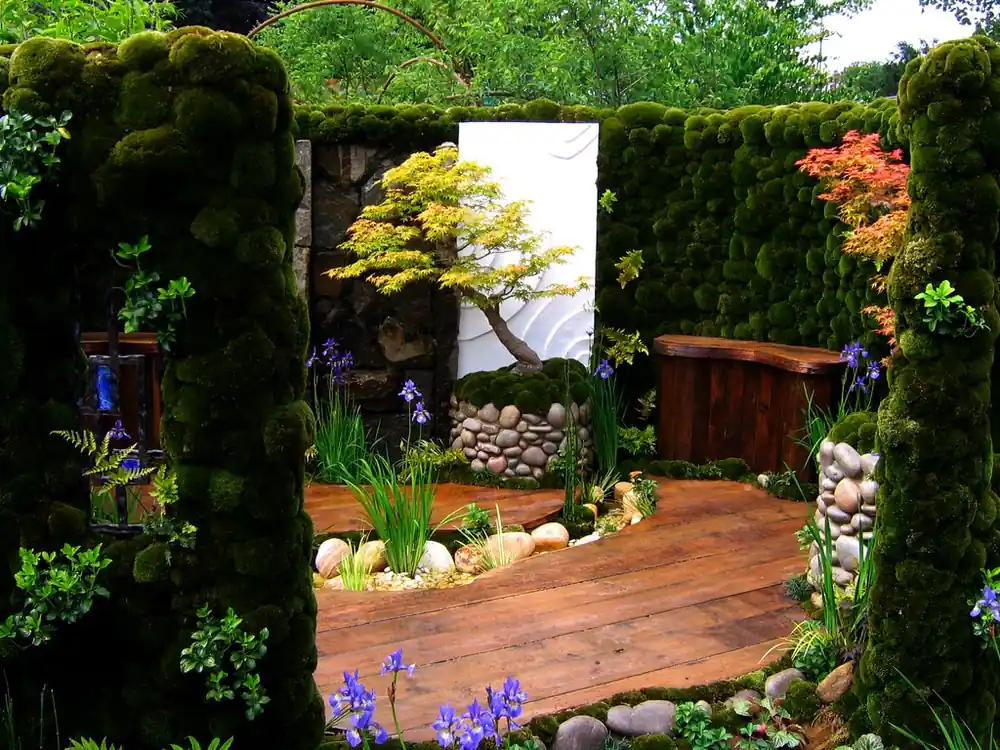
DesignIn praise of damp corners, ancient walls and the quiet plants that ask only to be left alone.
Read the noteTell us about your patch of earth. We'll walk it with you, sketch the possibilities, and tend it into a garden with a point of view.